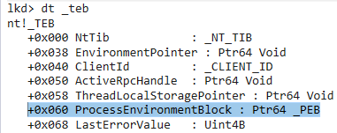

# Grabbing the PEB
There are many ways to grab the PEB.
## via the TEB
The TEB - Thread Environment Block - contains a pointer to the PEB called
ProcessEnvironmentBlock.
https://docs.microsoft.com/en-us/windows/win32/api/winternl/ns-winternl-tebFor 32bit code, the TEB is stored in the
fs register.
For 64bit code, the TEB is stored in the
gs register.
In a 32bit TEB, the offset to
ProcessEnvironmentBlock is
0x30.
In a 64bit TEB, the offset to
ProcessEnvironmentBlock is
0x60. (pictured above)
Therefore,
in 32bit code, we can grab a pointer to the PEB by referencing:
fs:[0x30]in 64bit code, we can grab a pointer to the PEB by referencing:
gs:[0x60]### using instrinsics
__readgsqword (read GS register) and
__readfsdword (read FS register) are compiler intrinsics.
They're functions intrinsic to the compiler.
#include <stdio.h>
#include <Windows.h>
#include <winternl.h>
PPEB GrabPEB(void)
{
PPEB p_peb = NULL;
#ifdef _WIN64
p_peb = (PPEB)__readgsqword(0x60);
#else
p_peb = (PPEB)__readfsdword(0x30);
#endif
return p_peb;
}
int main(void)
{
PPEB p_peb = NULL;
p_peb = GrabPEB();
printf("PEB @ 0x%p \n", p_peb);
return 0;
}
### Assembly
Example below is inline assembly.
#include <stdio.h>
#include <Windows.h>
#include <winternl.h>
/*
32bit only because Visual Studio doesn't accept x64 inline assembly.
*/
PPEB GrabPEB_InlineAsm(void)
{
PPEB p_peb = NULL;
_asm
{
xor eax, eax; // clear eax
mov eax, fs:[0x30]; // grab start of PEB
mov p_peb, eax; // move PEB pointer from EAX into variable
}
return p_peb;
}
int main()
{
PPEB p_peb = NULL;
p_peb = GrabPEB_InlineAsm();
printf("PEB @ 0x%p \n", p_peb);
return 0;
}
### Grab TEB first -> then grab ProcessEnvironmentBlock for PEB
Here we use
NtCurrentTeb to grab the TEB (which just does
__readfsdword(0x18))
#include <stdio.h>
#include <Windows.h>
#include <winternl.h>
int main(void)
{
PTEB p_teb = NULL;
p_teb = NtCurrentTeb();
printf("TEB @ 0x%p \n", p_teb);
printf("\t ProcessEnvironmentBlock: 0x%p \n", p_teb->ProcessEnvironmentBlock);
PPEB p_peb = NULL;
p_peb = p_teb->ProcessEnvironmentBlock;
printf("PEB @ 0x%p \n", p_peb);
printf("\t BeingDebugged: %d \n", p_peb->BeingDebugged);
return 0;
}
## via NtQueryInformationProcess
NtQueryInformationProcess retrieves information about a specified process.
We can request
ProcessBasicInformation which returns a
PROCESS_BASIC_INFORMATION struct.
typedef struct _PROCESS_BASIC_INFORMATION {
PVOID Reserved1;
PPEB PebBaseAddress;
PVOID Reserved2[2];
ULONG_PTR UniqueProcessId;
PVOID Reserved3;
} PROCESS_BASIC_INFORMATION;
From the
PROCESS_BASIC_INFORMATION struct, we can the grab the PEB from the
PebBaseAddress entry.
#include <stdio.h>
#include <Windows.h>
#include <winternl.h>
#pragma comment(lib, "Ntdll.lib")
PPEB GrabPEB_NtQuery(void)
{
NTSTATUS nt_status = 0;
PROCESS_BASIC_INFORMATION pbi = { 0 };
PPEB p_peb = NULL;
nt_status = NtQueryInformationProcess(GetCurrentProcess(), ProcessBasicInformation, &pbi, sizeof(PROCESS_BASIC_INFORMATION), NULL);
if (!NT_SUCCESS(nt_status))
return NULL;
p_peb = pbi.PebBaseAddress;
return p_peb;
}
int main(void)
{
PPEB p_peb = NULL;
p_peb = GrabPEB_NtQuery();
printf("PEB @ 0x%p \n", p_peb);
return 0;
}